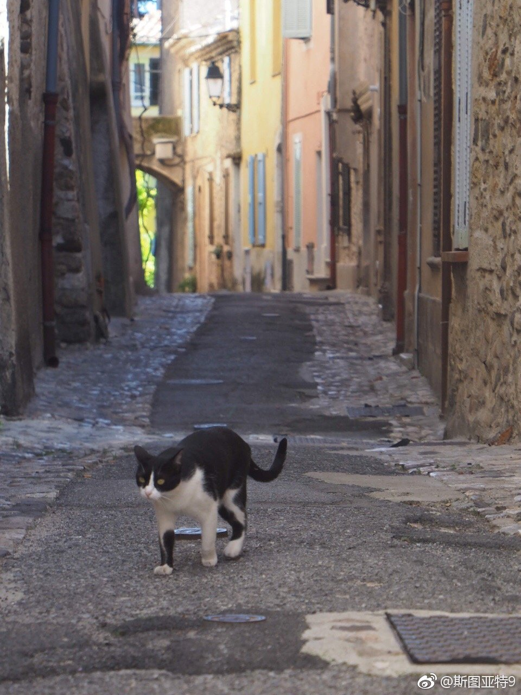

去年9月25日，Biot。觉得法国南部那些城市的老城区有点千篇一律，且人挤人，想找一个宁静的小村走一走，于是那天下午选择了玻璃制造小镇Biot。走在几乎没人的小村街道上，感觉出奇的好，好像时间凝固了一样。那种静谧无法在照片上体现出来。 
不是很理解，为什么一本英国人写的书（A Short History of Europe: From Pericles to Putin 网页链接），去年11月出版的，在美国要今年3月才出版？连电子书也是？这几个月用来干什么，印刷吗？